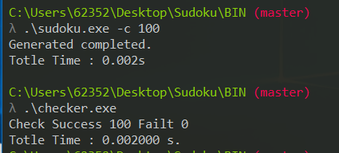
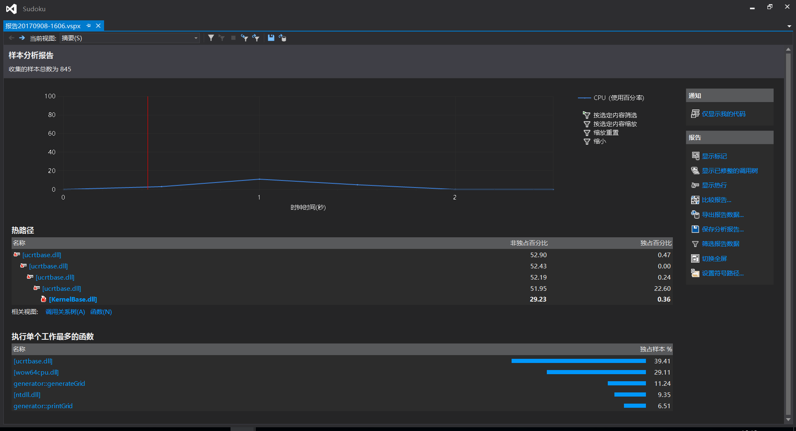
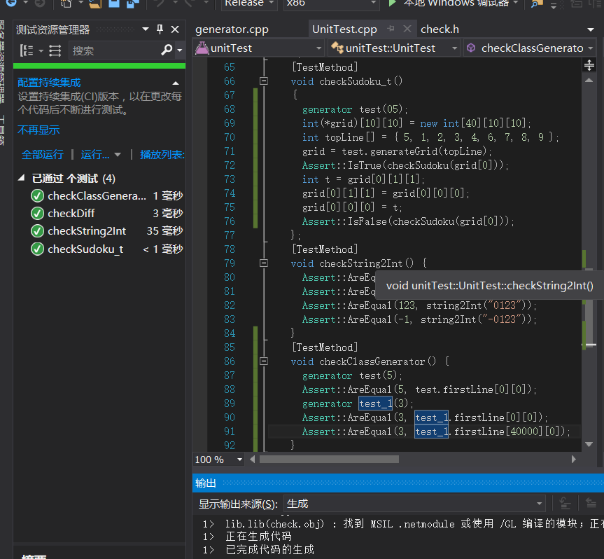
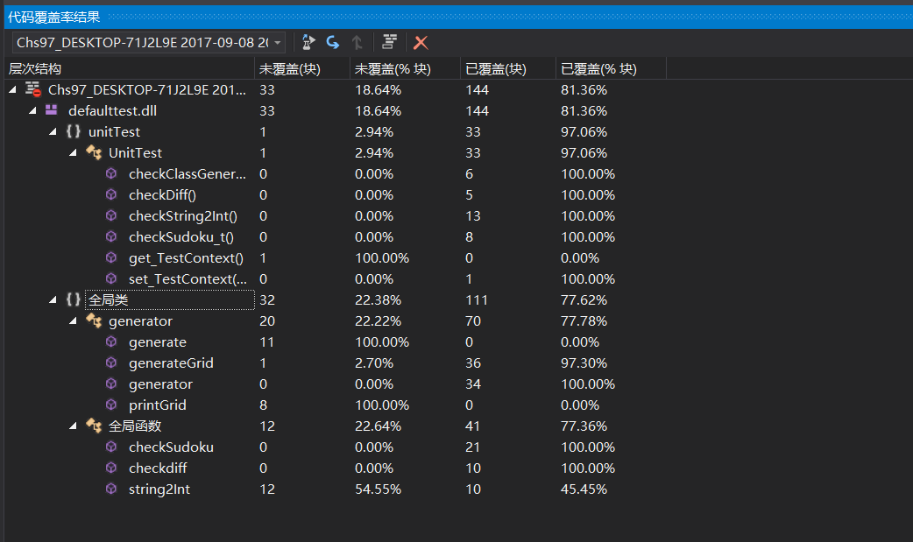

项目相关要求
利用程序随机构造出 N 个已解答的数独棋盘 。
输入
数独棋盘题目个数 N
输出
随机生成 N 个 不重复 的 已解答完毕的 数独棋盘，并输出到 sudoku.txt 中，输出格式见下输出示例。
输入示例
1 | sudoku.exe -c 1 |
输出示例
1 | 6 1 2 3 4 5 7 9 8 |
遇到的困难及解决方法
一、第一次使用 VS
- 困难描述： 第一次使用 VS，程序构建流程不清除，包括如何添加单元测试，将 lib 与主程序分开。
- 做过哪些尝试： 从 github 下载gtest的解决方案查看配置，换过无数次 VS 版本。
- 收获： VS 各个版本的功能有所不同, VS compare,最终选择 Visual Studio Enterprise 2015
二、单元测试&覆盖率
- 困难描述： VS 除了 Enterprise 版本其他没有覆盖率分析。
- 做过哪些尝试： 使用其他扩展，但没找到一个扩展可以分析 VS 所托管的单元测试。
- 收获： 切回 Visual Studio Enterprise 2015， 成功分析覆盖率
三、持续集成
- 困难描述： 想通过TravisCi和Coveralls+Github 进行持续集成和单元测试覆盖率分析，当我 push 代码(source)之后，Travis 配置 持续集成，单元测试通过之后，自动构建项目，并发布到 github，然后 coveralls 进行单元测试覆盖率分析。
- 做过哪些尝试： 各种 Google，猜想：如果需要配置持续集成，必须使用 gtest 等 VS 以外的单元测试框架，于是放弃。
设计说明
解题思路
阅读题目后，首先想到的是爆搜，所有的情况有$(9!)^9$ , 仔细分析数独的特点，每一行每一列的数都是1-9 ,并且划分为 9 个区域，每个区域的 3*3 方格都是 1-9 ,那么，我们很容易可以确定前 3 行，先确定第一行的数，第 2， 3 行再通过偏移得出来，最后得到满足条件的前 3 行。 得到满足的前 3 行， 可以通过前三行分块列变换得到后 6 行，最后得出数独解矩阵。
设计实现
目录结构：
1 | ├─BIN |
lib：check 的方法有：
1 | bool checkdiff(int arr[], int size); // 检查数组的元素是否互异，并且是1-size的自然数 |
lib：generator
1 | class generator |
generator(6) -> generate(n) -> generateGrid(topLine);
代码说明
1 | generator::generator(int sn) { |
1 | int (*generator::generateGrid(int topLine[]))[10][10] { |
1 | bool checkSudoku(int grid[10][10]) { |
测试运行

1 | 6 1 2 3 4 5 7 9 8 |
性能分析
复杂度：
预估： 假设生成全排列(next_permutation)的复杂度为 O(n!), generator(n)的构造函数复杂度为 O(9!), generateGrid()的复杂度为 O（3！*3！*9*9） 假设需要生成的数独解个数为 n 那么复杂度大约为 O(9! + n / 25 * 3！*3！*9*9) ≈ 1e8 所耗 CPU 预估小于 1000ms 再加上输出到文件的 IO 操作，大概时间约为 1000ms。
性能分析图

性能优化
个人认为，优化可以从输出到文件的 IO 操作中入手，可以适当增加运行内存当作缓冲区，再输出到文件。
单元测试
单元测试结果

覆盖率测试

PSP 分析
| PSP2.1 | Personal Software Process Stages | 预估耗时（分钟） | 实际耗时（分钟） |
|---|---|---|---|
| Planning | 计划 | 12 | 20 |
| · Estimate | · 估计这个任务需要多少时间 | 12 | 20 |
| Development | 开发 | 350 | 515 |
| · Analysis | · 需求分析 (包括学习新技术) | 60 | 180 |
| · Design Spec | · 生成设计文档 | 20 | 40 |
| · Design Review | · 设计复审 (和同事审核设计文档) | 0 | 0 |
| · Coding Standard | · 代码规范 (为目前的开发制定合适的规范) | 30 | 15 |
| · Design | · 具体设计 | 30 | 30 |
| · Coding | · 具体编码 | 120 | 150 |
| · Code Review | · 代码复审 | 30 | 40 |
| · Test | · 测试（自我测试，修改代码，提交修改） | 60 | 60 |
| Reporting | 报告 | 65 | 85 |
| · Test Report | · 测试报告 | 15 | 15 |
| · Size Measurement | · 计算工作量 | 10 | 10 |
| · Postmortem & Process Improvement Plan | · 事后总结, 并提出过程改进计划 | 40 | 60 |
| 合计 | 427 | 620 |
其他
结合上次作业的评分总结，在博客中谈谈你关于 执行力 、 泛泛而谈 的理解，好与不好都必须列举实际例子、数据或推理加以说明。
执行力：个人认为，执行力就是对于需要做的想要做的事情，是立马去做，还是拖了很久才做。并且做的过程应该是认真的，不是应付的。我觉得我的执行力确实不怎么样，5 月份在 todolist 上的事情，拖到了 8 月份才做，甚至，8 月份只做了一半，感觉周围的诱惑有点多，什么斗鱼直播，csgo，王者荣耀…，关于怎么提高执行力呢，，我也不知道。
泛泛而谈: 大概，在以后的简历上总会出现：熟悉，了解，掌握，这些词语对于计算机专业来说，是很难界定的。对于上个作业出现的：
项目经验也比较丰富吧这句话,具体来说目前所写过的项目有： West2Join, 代代, **学车公众号，金**微信小程序，**平台超级管理后台, wonderland,以上项目的前端部分.还有就是一些自己练手的小东西。
对于单元测试的个人体会
有一种开发流程叫测试驱动开发(Test-Driven Development - TDD),在写某功能代码之前，应当先把单元测试写好，然后编写通过测试的代码来推动开发的进行。但是我觉得，很多需求和功能都是开发到越后期越明确的，在前期想要写出某功能的所有情况的测试用例有点困难，个人觉得，这个开发流程在重构的时候使用比较好。
有一本书叫<<重构与模式>>这本书似乎很推荐 TDD 这种开发流程。